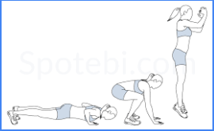
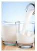
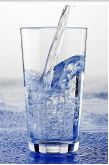

Health And Wellness
10/7
After gaming for a long period of time, what feels tired?
Sometimes my eyes get tired when I play a certain game after a long time. It normally only last for like 30 minutes so I don't worry to much about it.
10/26
Q&A
I learned that Mr. Huston's job is to organize events, and make sure they won't overlap. The wages in that job area are rising. The way to get the job or getting recommended for a job is by grinding a game. They spend around 3,000 for pc's. Mr Suh's job is to coach players and manage the players'health. He works out with players 3 times a week, and counts players calories. They do scrims Monday through Friday and physically work out Mondays, Wednesdays and Fridays for an hour. He said we should exercise 4 times a week for 30 minutes. He said we should also sleep well. He says he also has to eat and practice what he is teach others.
Fitness Plan
Walking: Walking is important because it burns calories and gets your legs moving
Burpees: work out your legs, hips, butt, abdomens, chest and shoulders.
Sit Ups: Works out rectus abdominis, transverse abdominis, hip flexors, chest, and neck.
Squats: Works out your Glutes and quadriceps
Jumping Jacks: Jumping Jacks is a whole body workout. It works out your shoulders, heart, lungs, core, hip flexors and glutes.
Push Ups: Push ups build upper body muscles. Your triceps, sholders and chest.
Diet Plan
Diet is important because it gives you more energy. Also eating healthy prevents dieseases and pimples.
My plate says you should have 6 ounces of grains, 2.5 cups of vegetables, 2 cups of fruits, 3 cups of dairy, 5.5 ounces of Protein and 6 teaspoons of oils.
My plate also says you should limit yourself to 240 calories per day and consume less than 2,300 milligrams of sodium per day.

What Should We Drink
Men should drink about 15.5 cups or 3.7 liters of water per day. Drinking water prevents dehydration. Dehydration causes mood change, unclear thinking,constipation, kidney stones and overheating
You should also drink 3 cups of milk a day. Milk is good for you because there is lots of calcium and protein.
  Ok Fact SheetCopyright © MyWebsite. All rights reserved.